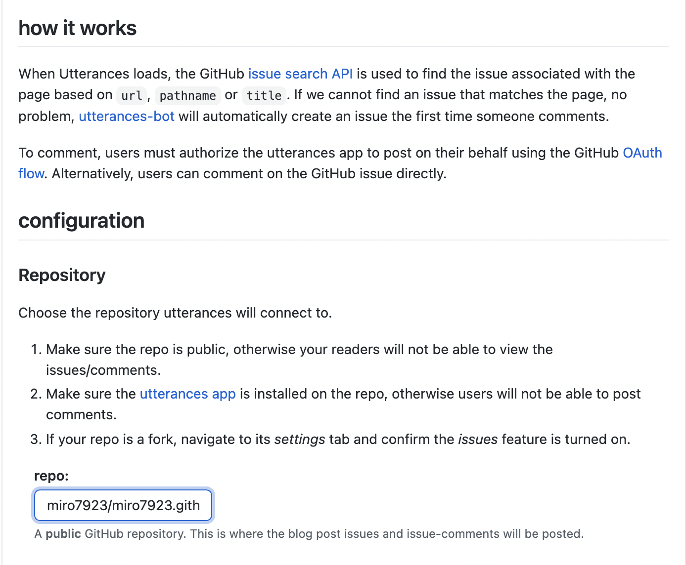
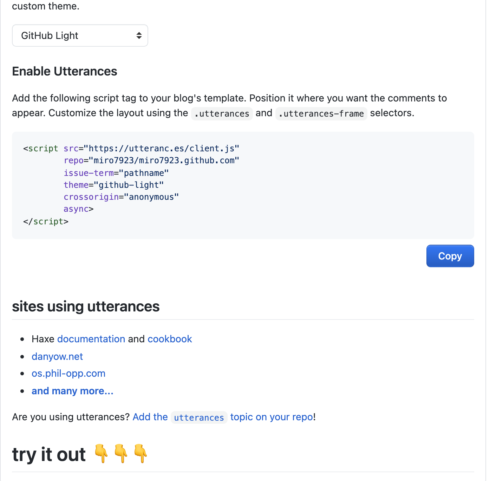
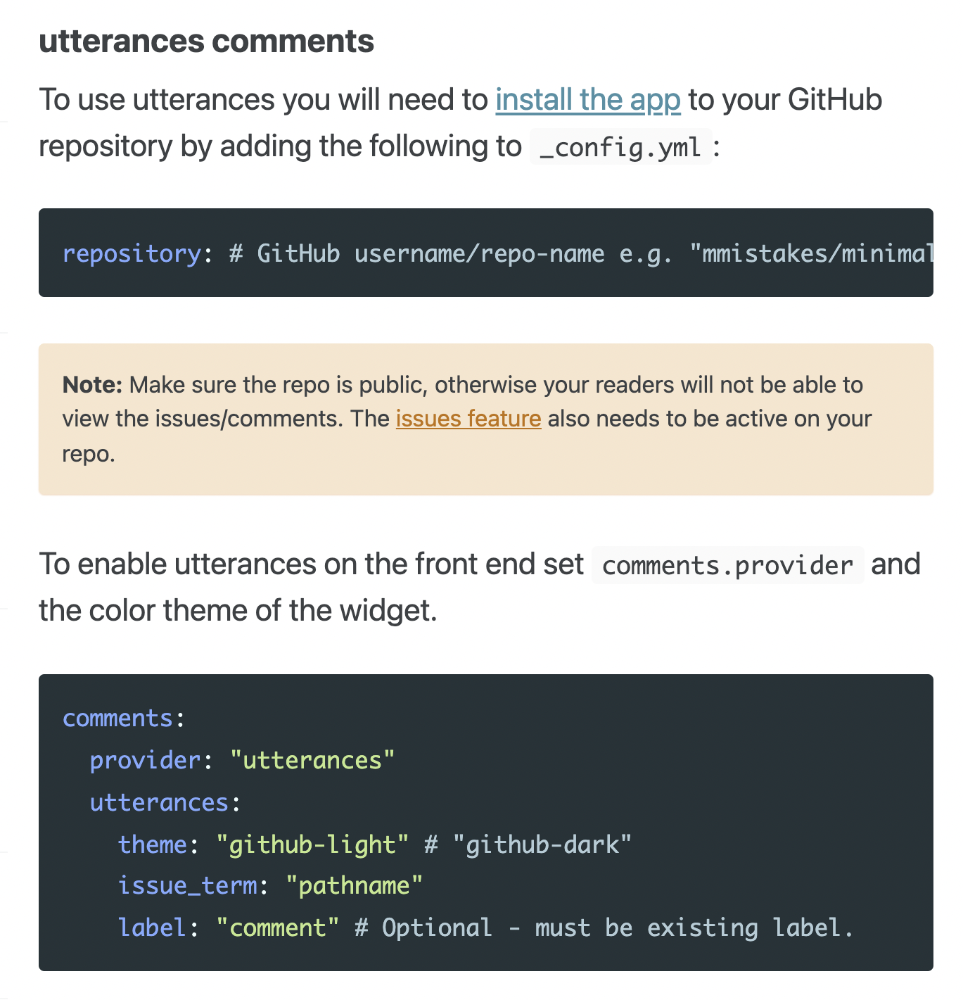
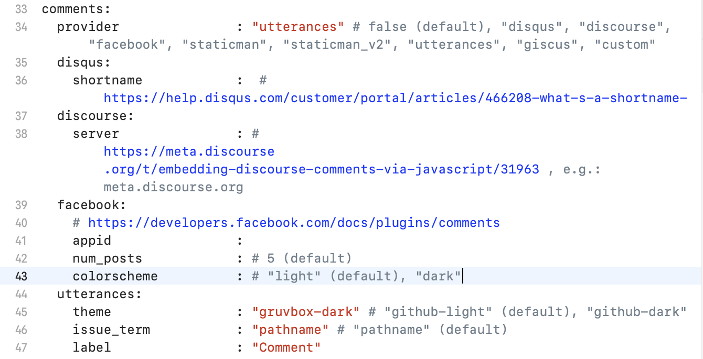
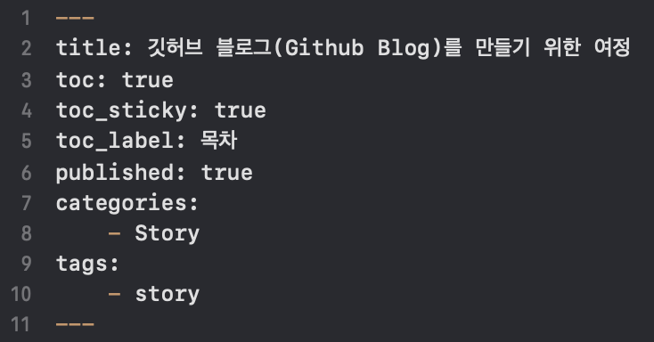

깃허브 블로그(Github Blog)를 만들기 위한 여정
🎬 시작
개발 공부를 시작하고 기존에 쓰던 티스토리 블로그가 있긴 했는데 뭔가 깃헙을 이용해서 블로그를 꾸미고 여기에 공부한 내용을 올리고 싶어졌습니다. 다른 개발자 분들이 쓰시는 걸 보니까 되게 있어보이기도 하고 만들어져 있는 큰 회사(?)의 블로그를 쓰는 것 보다는 내가 직접 만들어 보면 뭔가 더 공부가 되지 않을까… 하는 생각으로 깃헙 블로그 만들기에 호기롭게 도전하게 되었습니다.
그리고 그것은 엄청난 고생길의 시작이었습니다….ㅎ
0. 시작 전에… Ruby
깃헙 블로그는 보통 jekyll(지킬)이라는 것을 사용해서 꾸미더라고요. 근데 저건 ruby 기반으로 만들어져 있어서 깃헙 블로그를 시작하려면 ruby를 깔아야 합니다. 전 처음에 이것도 모르고 시작했기 때문에 블로그 글을 똑같이 따라해도 안 되었던 것들이 참 많았기 때문에…ㅎ 이 글을 보시는 분들은 시작 전에 꼭 ruby를 깔고 시작하세요!
ruby 설치 관련글은 아래 글과 같이 구글에 검색하시면 많이 보실 수 있을 것입니다.
https://ogaeng.com/jekyll-blog-install/
부디 고통받지 마시고 사전에 루비 설치하고 진행하세요…
+) 그리고…
시작 전에 깃헙 블로그는 터미널에서 명령어를 입력하는 것을 이용해서 만들 것인데 처음 하면 이것도 뭔가 싶으실 수 있습니다.
모든 블로그 글들을 따라하다 보면 터미널에서 무슨 명령어를 입력해라고 할텐데 그냥 터미널을 켜고 명령어를 입력하면 전혀 작동하지 않고 명령어로 실행하고자 하는 파일이 들어있는 위치로 이동한 다음에 해당 명령어를 입력해야 합니다.

그렇기 때문에 블로그 repository가 있는 폴더에서 마우스 우클릭해서 나오는 메뉴에서 ‘폴더에서 새로운 터미널 열기’ 를 선택해서 터미널을 실행하거나
cd /폴더경로
cd 명령어를 이용해 해당 파일이 있는 폴더로 이동해 모든 명령어를 입력해 주어야 합니다.
1. 참고했던 글
https://zeddios.tistory.com/1222
맨 처음에는 이 블로그 글을 참고해서 만들었었습니다.
그런데 똑같이 따라하고 심지어 테마도 똑같은 걸로 받아 썼지만 안 되더라고요… 제 repo에 push도 잘 되는데 정작 제 블로그 페이지에 들어가보면 맨 처음에 기본으로 주는 테마에서 변경이 안 되었습니다. .gitignore 설정이 잘못 되어있나 싶어서 아예 지워도보고 기타등등 별 짓을 다 해봤지만 되질 않아서… 이 글을 따라하며 만들었던 repo를 삭제하고 다시 만들기로 다짐하면서 다른 블로그 글을 찾아 떠나게 됩니다.
만약 이 글대로 하셔서 잘 되시면 거기서 스톱하고 나만의 블로그를 꾸미시면 됩니다. 전 되질 않아서 더 많은 시간을 소비해야만 했거든요…ㅠ
! 그리고 테마를 설치하다 보면 거의 99% 확률로
`require’: cannot load such file – webrick (LoadError)
이런 메세지를 보게 됩니다. 근데 다른 블로거분들은 이런걸 보신 적이 없는지 이것에 대한 언급이 아무도 없으심 ㅠ.ㅠ
https://junho85.pe.kr/1850
만약 저런 오류 메세지를 보시면 이 글을 참고하여 해결하시면 됩니다.
bundle add webrick
무엇보다도 중요한 명령어… 전 테마를 설치할 때마다 webric을 꼭 추가해 주어야 했습니다.
https://honbabzone.com/jekyll/start-gitHubBlog/
그리고 두번째로 찾은 글
새로운 마음으로 다시 repo를 만들고 테마도 똑같은 걸로 다운받아서 진행했습니다.
이번엔 다행히 잘 되었습니다. 😄👏👏👏
하지만 댓글 기능을 추가하려고 disqus에 들어가 보니까

기본적으로 유료 서비스더라고요… 무료 서비스도 있긴 한데 무겁고 광고가 붙는다고 해서 disqus는 쓰지 않고 오픈소스에다 가벼운 utterances를 쓰기로 했습니다.
2. utterances로 댓글 기능 만들기
사실 영어를 그닥 좋아하지 않아서(^^;) 최대한 한국인이 쓴 글을 구글링 해서 찾는 편이지만 제가 쓰는 테마는 영어를 쓰는 사람이 만들었기 때문에 영어로 된 설명서를 봐야만 했습니다.
https://github.com/apps/utterances
일단 여기로 이동하셔서 utterances를 repo에 설치합니다.

인스톨 버튼을 누르시면

이런 화면을 보실 수 있는데 제가 가진 모든 repo에 댓글 기능을 추가할 필요는 없기 때문에 블로그용으로 쓰는 repo만 선택했습니다. 여기까지 하셨으면 Install을 눌러서 다음으로 진행하시면 됩니다.

다음으로 넘어가면 이런 화면을 보실 수 있는데 configuration 아래 repo를 설정하는 란에 나의 깃헙 블로그 파일들을 저장하는 repository의 경로를 적어주시면 됩니다. 깃헙아이디/깃헙아이디.github.com 혹은 깃헙아이디/깃헙아이디.githun.io 이런 식으로 보통 적으실 것입니다.

밑으로 내려보시면 이런 선택란이 있을텐데 댓글이 작성되는 루트를 어디로 설정해주느냐 선택하는 것이라고 합니다. pathname은 블로그에 올릴 포스트의 파일명으로 깃헙 블로그에 올릴 포스트의 파일 이름 형식은 정해져 있어서(ex. 2022-01-30-title.md) 바꿀 일이 거의 없다고 봐도 되기 때문에 맨 첫번째 것으로 선택했습니다. 다른 분들도 많이 선택하시는 옵션이었습니다.

그리고 또 밑으로 내려보시면 이런 태그를 보실 수 있는데 본인이 쓰시는 테마의 레이아웃에 이걸 설정하는 란이 따로 있다면 저 태그를 복사해서 넣어주시면 되는데 제가 쓰는 테마엔 따로 없어서 저 태그는 필요가 없었습니다.
Theme 아래 화살표가 있는 박스를 눌러보시면 댓글창의 테마를 선택할 수 있으니 맘에 드는 것을 고르시면 되겠습니다.

대신 위 설명처럼 _config.yml 파일에서만 설정해주면 되었습니다.

이런 식으로 provider 이름만 설정해주고 아래 utterances 정보 입력란에서 입력만 해 주니까

짜잔! 댓글창이 생겼습니다!! 😘👏👏
아 행복해… 이거 만든다고 또 한시간 썼었거든요…ㅠ
댓글창 색이 테마랑 좀 안맞는 감이 있지만 이건 천천히 수정하기로 하고.. 여기까지 해서 제 첫 깃헙 블로그를 만들기 위한 여정이 마무리 되었습니다.
혹시 제 블로그 설정 파일이 궁금하시면
https://github.com/miro7923/miro7923.github.com
여기를 참고하세요.
https://github.com/miro7923/miro7923.github.com/blob/main/_config.yml
그 중에서도 _config.yml 파일 내용이 궁금하시면 여기를 참고하시면 됩니다.
3. 그런데.. 열심히 쓴 글이 포스팅 되지 않는다.
드디어 블로그 세팅을 완료하고 설레는 마음으로 첫 글을 썼는데 로컬 서버로 띄워 보면 잘 보이는데 암만 push를 해도 실제 제 블로그에서는 보이질 않는 것이었습니다…! 머선일이고 이게 ㅠㅠ
약 한시간동안 헤멘 끝에
https://devyuseon.github.io//github%20blog/githubblog-post-not-shown/
이 글을 보고 해결할 수 있었습니다.

저는 _config.yml에 future: true 추가하고 게시글 마크다운 파일의 상단 타이틀 쓰는 란에 published: true 를 추가해 주었더니 해결되었습니다.
그리고 네이버나 티스토리처럼 큰 회사 블로그처럼 push 하자마자 블로그가 업데이트 되는 것은 아니고 몇 분 정도 기다려야 변경내용이 완전히 반영이 되더라고요. 외국 회사라 그런가?
하지만 네이버랑 티스토리에 비해서는 손이 가는게 많아서 그런지 포스트 하나를 쓰고 나면 뭔가 엄청 뿌듯하고 그렇습니다.😄 열심히 해야지!
그럼 오늘은 여기까지… 다음 글에서 만나요!!